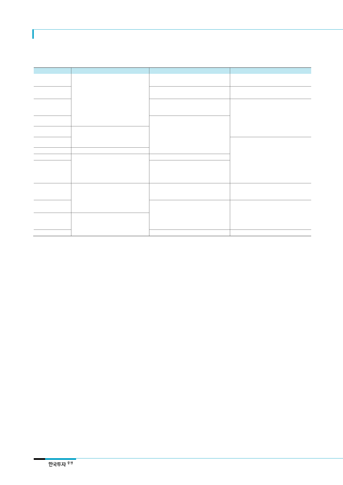

삼성카드(029780)
<표 2> 가맹점수수료 제도 변천
시행시점
2007 년 이전
2007 년 8 월
중소가맹점 기준
연매출 4,800 만원 미만
신용카드 가맹점수수료율
일반가맹점: 1.5%~4.5%
영세가맹점: 2.0%~4.5%
일반가맹점: 1.5%~3.6%
영세가맹점: 2.0%~2.3%
2008 년 10 월
서민생활 밀접업종(미용실, 의류, 식당 등)
2009 년 2 월
2010 년 4 월
2011 년 3 월
2011 년 5 월
2012 년 1 월
2012 년 9 월
2015 년 1 월
2016 년 1 월
2017 년 8 월
2019 년 1 월
연매출 9,600 만원 미만
연매출 1.2 억원 미만
연매출 2 억원 미만
중소가맹점: 연매출 2~3 억원(범위 확대)
영세가맹점: 연매출 2 억원 이하(기존
중소가맹점)
중소가맹점: 연매출 2~3 억원 → 3~5 억원
영세가맹점: 연매출 2 억원 이하 → 3 억원
이하
평균 수수료율 2.74% → 2.57%
전통시장 가맹점: 2.0%~3.6% →
2.0%~2.2%
전통시장 중소가맹점: 2.0%~2.2% →
1.6%~1.8%
전통시장 외 중소가맹점: 3.3%~3.6% →
2.0%~2.15%
모든 중소가맹점: 1.6%~1.8%
일반가맹점: 업종별 수수료 체계 → 원가
기반 체계
(수수료율 상한: 2.7%)
중소가맹점: 1.5%
중소가맹점: 2.0%
영세가맹점: 1.5%
중소가맹점: 2.0% → 1.3%
영세가맹점: 1.5% → 0.8%
일반가맹점 수수율 상한: 2.7% → 2.5%
원가 하락을 반영해 가맹점수수료 재산정
주: 2012년 말부터 가맹점수수료율은 원가 기반으로 3년마다 재산정
자료: 금융위원회, 한국투자증권
체크카드 가맹점수수료율
일반가맹점: 1.5%~4.5%
일반가맹점: 1.5%~2.5%
일반가맹점: (겸영) 2.0%~2.1%, (전업)
2.2%~2.5%
중소가맹점: 2.0%~2.1%
일반가맹점: (겸영) 1.5%, (전업) 1.7%
중소가맹점: 1.0%
중소가맹점: 1.5%
영세가맹점: 1.0%
일반가맹점: 1.5% + 계좌이체 수수료율
중소가맹점: 1.5% → 1.0%
영세가맹점: 1.0% → 0.5%
이제까지의 VAN수수료 감축
노력
앞으로의 VAN수수료 추가
감축
카드 유치수수료, 마케팅비용
절감될 여지. 조달비용 및
대손비용도 안정적
2. 구름에 가려진 비용 절감 노력
비용 감축 노력에 주목할 필요가 있다. 예로 VAN수수료 비용률은 지속적으로 내려가고 있다.
그간의 VAN수수료 절감 사례를 보면 2016년 7월에는 5만원 이하 무서명 전환으로 VAN대
리점에게 가는 전표매입수수료 36원을 18원으로 50% 절감한 바 있다. 또한 신한카드나 국
민카드에서는 최근 VAN수수료를 정률제로 전환했으며, 삼성카드는 2016년 3분기 정액제는
유지하되, 1만원 이하 결제 건에 대한 단가를 인하한 바 있다.
특히 최근에 가맹점수수료 인하에 대한 반대급부로 VAN수수료 인하 환경이 조성되고 있다.
올해 9월 금융위는 유권해석을 통해 대형가맹점에 대해 리베이트 소지가 없는 조건으로
VAN사를 거치지 않는 직승인 결제방식을 허용했다. VAN사들은 결제/승인 업무와 전표매입
업무를 수행하고 건당 100원 내외의 VAN수수료를 카드사들로부터 받는데, 최근 삼성카드를
비롯한 일부 카드사들은 VAN수수료 중 전표매입 비용을 기존대비 50% 이상 낮춘 케이알시
스와 전표매입 업무 위탁계약을 맺었다.
한편 기존 모집인 채널 대비 카드 유치수수료가 저렴한 SC은행, 복합점포(삼성생명/화재),
모바일 채널을 활용한 카드 모집 합산 비중이 25% 내외로 상승하면서 영업수수료율도 계속
하락하고 있다. 또한 카드회원에게 포인트 적립이나 청구할인, 무이자 할부 등으로 제공되는
마케팅비용이나 서비스비용률은 이제까지 완만한 상승 추세였는데, 3분기를 기점으로 하락
추세로 전환됐다. 마지막으로 최근 여전채의 스프레드 안정화로 총조달비용률은 2019년 4분
기는 되어야 상승전환될 것으로 보고 있으며, 대손비용도 서민금융 지원강화와 자산시장 호
조로 완만한 상승세에 그칠 것으로 전망한다. 결론적으로 영업수익의 67%나 차지하는 판관
비가 줄어들면서 수익성 악화 우려가 상당 부분 상쇄될 것이다.
4